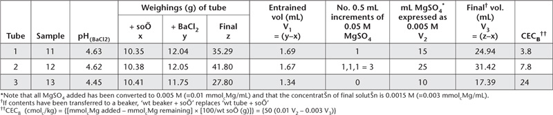

The original compulsive exchange method of Gillman and Bakker (1979), later described by Rhoades (1982), for use on highly weathered tropical soils, has been superseded (Gillman and Sumpter, 1986). It was found (Gillman et al. 1982) that barium chloride (BaCl2) alone yielded low results for exchangeable K+ and Na+ when compared to extracting solutions containing NH4+. The revised method, suited to the same soils, employs 0.1 M BaCl2/0.1M NH4Cl for the initial extraction of exchangeable bases; this concentration of NH4+ is sufficient to overcome the before-mentioned limitation at the same soil/solution ratios.
Following removal of entrained NH4+ with 0.05 M BaCl2, the ionic strength of BaCl2 solution in the presence of soil is adjusted, usually to 0.006 M. This ensures saturation of the soil with Ba2+ at an ionic strength near that of the soil solution. After removal of supernatant BaCl2, a magnesium sulfate (MgSO4) solution is added to replace the Ba2+ from negatively charged sites at the same ionic strength.
Precipitation of BaSO4 occurs and Cl– are replaced by SO42– on positively charged exchange sites.
AEC and CEC are determined by analysis of the MgSO4 supernatant. For AEC, a correction for Cl– associated with entrained BaCl2 must be made.
Most tropical soils from humid regions contain low levels of soluble salts (<0.3 dS/m). Accordingly, the method described has no pre-treatment for their removal prior to extraction of exchangeable bases. Modifications of this method are available to extend its applicability to saline soils, including those with up to 0.6–0.7% gypsum. When errors due to the presence of soluble salts cannot be tolerated, see Methods 15E2 and 15E3.
The compulsive CEC (CECB) determined by this method follows that described by Gillman (1979). The values of CECB can differ from ECEC (Ca2+ + Mg2+ + Na+ + K+ + H+ +Al3+; each expressed as cmolc/kg) because CECB does not include contributions from the exchangeable acidic cations (Gillman and Sumpter 1986).
0.2 M Barium Chloride/0.2 M Ammonium Chloride
To about 3500 mL deionised water add 70 mL 10 M HCl then 60 mL NH4OH (s.g. 0.91). Into this dissolve 195.4 g barium chloride dihydrate (BaCl2.2H2O), then adjust pH to between 5 and 7 (electrodes must be clean) by dropwise addition of ≈1 M HCl or ≈1 M NH4OH. Make volume to 4 L with deionised water.
Exchangeable Bases Extracting Solution 0.1 M BaCl2/0.1 M NH4 Cl
Dilute 500 mL of 0.2 M BaCl2/0.2 M NH4Cl to 1 L with deionised water.
0.05 M Barium Chloride
Dissolve 12.21 g barium chloride dihydrate (BaCl2.2H2O) in deionised water and dilute to 1 L. Store in plastic container.
0.002 M Barium Chloride
Dilute 40 mL 0.05 M BaCl2 to 1 L with deionised water. Store in a plastic container.
Magnesium Solutions for Replacement of Ba
0.05 M Magnesium Sulfate
Dissolve 12.32 g of magnesium sulfate heptahydrate (MgSO4.7H2O) in deionised water and dilute to 1 L. Store in a plastic container.
0.005 M Magnesium Sulfate
Dilute 25 mL of 0.05 M MgSO4 to 250 mL with deionised water. Store in a plastic container only for short periods.
Reference 0.0015 M Magnesium Sulfate
Dilute 7.5 mL of 0.05 M MgSO4 to 250 mL with deionised water. Store in a plastic container only for short periods.
pH Adjustment Solution
0.1 M sulfuric acid.
Strontium Chloride Solutions (only required if using an AAS analytical finish)
Sr Stock Solution
1 L contains 8.33 g of Sr. As for Method 15A1.
Sr Working Solution
1 L contains 1.875 g of Sr. Dilute 225 mL of Sr Stock Solution to 1 L with deionised water. Store in plastic or borosilicate bottle.
Diluting Solution for Ca2+ and Mg2+ Analysis by AAS
1 L contains 1.50 g of Sr. Add 180 mL Sr Stock Solution to 200 mL of the identical 0.1 M BaCl2/0.1M NH4Cl Extracting Solution used for soil extractions, and dilute to 1 L with deionised water. Store in plastic or borosilicate bottle.
Dilute Sulfuric Acid Solutions
0.1 M H2SO4
0.05 M H2SO4
0.01 M H2SO4
Mixed Primary and Secondary Standards for Ca2+, Mg2+, Na+ and K+
As for Method 15A1.
Working Standards for Exchangeable Bases
To each 500 mL volumetric flask add 250 mL 0.2 M BaCl2/0.2 M NH4Cl; use the same batch that was diluted to prepare the Extracting Solution for exchangeable bases.
Dispense Mixed Primary or Secondary Standards as indicated in Tables 15.11 and 15.12. Dilute all solutions to 500 mL with deionised water. Mix well and transfer to clearly labelled plastic bottles. One set of Working Standards contains Ca2+ and Mg2+, while the second set contains Na+ and K+.
Exchangeable Bases and Compulsive Cation Exchange (CECB)
Weigh 2.00 g air-dry soil (<2 mm) in a tared 30 mL centrifuge tube (x). Add 20 mL of 0.1 M BaCl2/0.1 M NH4Cl Extracting Solution, mechanically shake for 2 h, centrifuge and retain the supernatant solution for analysis of exchangeable bases. To remove NH4+ from the system, add 20 mL of 0.05 M BaCl2, mix thoroughly with the aid of a vortex stirrer, centrifuge and decant. To avoid loss of material, which may occur in pouring, remove supernatant solution by suction (e.g. a vacuum water pump).
To reduce the ionic strength to 0.006 M (the approximate strength of many soil solutions across Australasia) wash the soil 3 times with 20 mL portions of 0.002 M BaCl2. After addition of the third portion, mix thoroughly and record suspension pHBaCl2 to obtain an estimate of soil pH at the ionic strength of a non-saline soil.
Centrifuge, remove the supernatant solution and, if an estimate of AEC is required, retain it for analysis of non-adsorbed (entrained) Cl– (C2). If not required for AEC, discard the supernatant solution. Weigh the centrifuge tube (y) to estimate the volume of BaCl2 retained in the soil, if measuring AEC.
Table 15.11. Examples of dilutions and concentrations for Ca2+ and Mg2+ Working Standards – 0.1 M BaCl2/0.1 M NH4Cl.
|
|
Equivalent soil content (cmolc/kg) of Ca & Mg, respectively, for 1:10 soil/extract ratio (final) following: |
|
mL of Mixed Primary or Secondary Standard in 500 mL |
Initial solution concentration (mmolcCa & Mg/L) |
1 + 4 dilutioon* of samples and standards |
1 + 24 dilutioon† ††of samples; 1 + 4 dilutioon of standards |
Mixed Ca & Mg Secondary Standard (10 mmolcCa & Mg/L) |
|||
5.0 |
0.10 |
0.10 |
0.5 |
10.0 |
0.20 |
0.20 |
1 |
15.0 |
0.30 |
0.30 |
1.5 |
25.0 |
0.50 |
0.50 |
2.5 |
37.5 |
0.75 |
0.75 |
3.75 |
Mixed Ca & Mg Primary Standard (100 mmolcCCa & Mg/L) |
|||
5 |
1 |
1 |
5 |
10 |
2 |
2 |
10 |
15 |
3 |
3 |
15 |
20 |
4 |
4 |
20 |
30 |
6 |
6 |
30 |
40 |
8 |
8 |
40 |
50 |
10 |
10 |
50 |
*Dilute 1 part Working Standards and sample suspensioon with 4 parts Sr Working Solutioon if analysing by AAS. For ICPAES, substitute the Sr Working Solutioon with 0.1 M BaCl2/0.1 M NH4Cl Extracting Solutioon.
†AAS analysis requires accurate 1:5 dilutioon of samples already diluted 1+4 with Sr Working Solution. Use Sr Diluting Solution for Ca2+ and Mg2+ Analysis by AAS (1 L contains 1.50 g Sr) as diluent. Working Standards already diluted 1+4 should not be further diluted.
††For ICPAES analysis, substitute the Sr Working Solutions with 0.1 M BaCl2/0.1 M NH4Cl Extracting Solution.
Begin the compulsive exchange of Ba2+ by Mg2+, by adding 10 mL of 0.005 M MgSO4 solution. Mix thoroughly and allow to stand for 1 h. End-over-end shaking of the tubes from this point onwards is not recommended unless leakage can be prevented.
Compare the EC of the suspension with that of 0.0015 M MgSO4. If the conductivity ratio (CR; conductivity of suspension/conductivity of 0.0015 M MgSO4) is <1.0, add 0.5 mL increments of 0.05 M MgSO4 until CR >1.5, allowing a little time for a steady state to be reached between additions. If no addition of 0.05 M MgSO4 is necessary, i.e. CR >1.0, take no further action. A conductivity meter that will accept a reference electrode and which will operate in ‘ratio mode’ is preferred for these measurements, although a conventional conductivity meter fitted with a single electrode will suffice.
It is important that the soil is saturated with Mg2+, and this does not always occur if the CR is gradually brought up to 1.0, with addition of the weaker 0.005 M MgSO4.
Check the pH of the suspensions. In some oxidic soils, addition of SO42– results in an increase of pH. If pH is greater than pHBaCl2 by more than 0.3 units, reduce the suspension pH to pHBaCl2 by dropwise addition of dilute H2SO4. Use 0.1 M H2SO4 for this purpose for well-buffered soils; for less well buffered to weakly buffered soils, 0.05 M H2SO4 and 0.01 M H2SO4, respectively, are recommended. With highly buffered soils such as the Ferrosols, it is usually safe to initially adjust pH to < pHBaCl2, knowing that an upwards pH drift will occur.
Table 15.12. Examples of dilutions and concentrations for Na+ and K+ Working Standards – 0.1 M BaCl2/0.1 M NH4Cl.
After samples have stood for at least 1 h, reduce the CR to about 1.0 by adding deionised water, and allow to stand overnight. The assessment of how close to approach CR = 1 is dependent on soil type. In some instances, the amount of water that has to be added exceeds the tube capacity, in which case transfer the contents to a tared beaker and continue. After standing, recheck the pH of the suspension and adjust to pHBaCl2 with dilute H2SO4 as described earlier.
Recheck CR and adjust to 1.0 ± 0.05 with deionised water. The addition of H+ causes a reduction of negative charge on variable charge surfaces and hence the release of Mg2+ and a rise in CR.
When appropriate conditions of pH and ionic strength in the suspension have been established, weigh the tubes (z) to give the final weight after Mg2+ replacement, required for the calculation of CECB.
Anion Exchange Capacity (AEC)
After the final weighing, centrifuge to clarify the suspension. Determine Cl– concentration in the supernatant (from this centrifugation; C1) and in the supernatant from the earlier centrifugation after the addition of BaCl2 (C2). Use Method 5A1 or 5A2, with appropriate adjustment for background matrix in standards for the automated procedure.
As for Method 15A1 but using relevant standards (Tables 15.11 and 15.12) and blank solutions.
Report exchangeable Ca2+, Mg2+, Na+ and K+ (cmolc/kg), expressed on an oven-dry basis. Use the air-dry moisture to oven-dry moisture ratio to convert to an oven-dry concentration. Refer to Method 2A1 for guidance with regard to this soil moisture calculation.
Use a well-planned worksheet (see Table 15.13) and make the calculations shown therein.
Report CECB (cmolc/kg), expressed on an oven-dry basis. Use the air-dry moisture to oven-dry moisture ratio to convert to an oven-dry concentration. Refer to Method 2A1 for guidance with regard to this soil moisture calculation.
where:
concentration of Cl– in final solution = C1 mmolc/mL
concentration of entrained Cl– = C2 mmolc/mL; and
V3 and V1 = values obtained from Table 15.13
Report AEC (cmolc/kg), expressed on an oven-dry basis. Use the air-dry moisture to oven-dry moisture ratio to convert to an oven-dry concentration. Refer to Method 2A1 for guidance with regard to this soil moisture calculation.
Table 15.13. Example of worksheet to calculate CECB.
